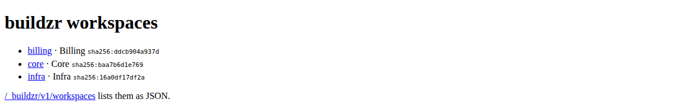
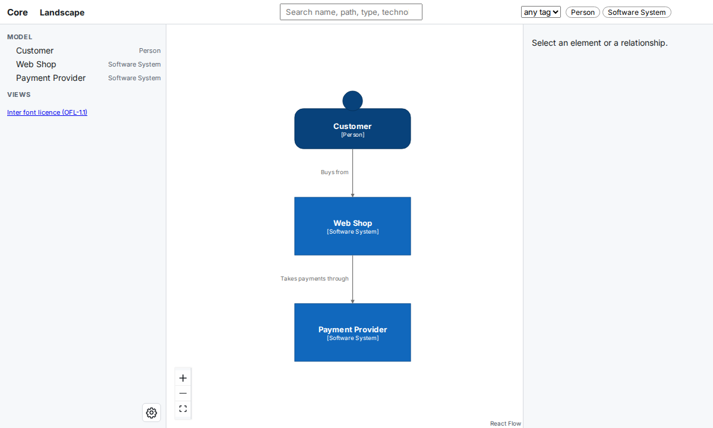
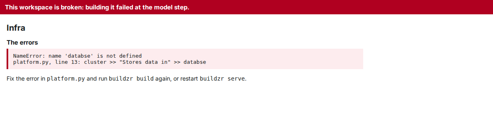
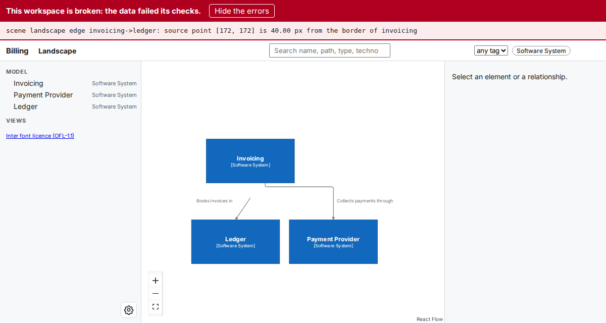

Serve your workspaces¶
In this tutorial, you build a project with three workspaces in two model files and serve them all with one buildzr serve. You open the page that lists them, change one model and see that only that one is built again, learn the options for serving to other people, and see what happens when a model file breaks. At the end, you know how buildzr serve decides what to build and where each workspace is.
Before you start¶
You need:
- buildzr installed, as in step 1 of the Quick Start. The Quick Start also shows what a single workspace looks like in the viewer.
- Node.js 18 or newer, for the layout step of the build. Check your version with
node --version.
Words used on this page¶
| Word | Meaning |
|---|---|
| workspace | A Workspace(...) that you write in Python, and what readers open at /<name>/: its viewer, its data and its Model API. |
| workspaces folder | The folder of Python files that create your workspaces. Here, it is architecture/, named in buildzr.yaml. Without that file, it is workspaces/. |
| built workspace | The folder that the build writes for one workspace: the viewer, the model data and build.json. |
| build output | The folder that holds every built workspace: .buildzr/build, the default. |
1. Create the project¶
This is the project of A project with several workspace files: two model files, which create three workspaces.
my-project/
├── buildzr.yaml
└── architecture/
├── billing.py creates the workspace Billing
└── platform.py creates the workspaces Core and Infra
In an empty project folder, save this as buildzr.yaml. It names the workspaces folder:
serve then builds every model file of the folder. To build only some files, or to give one file its own build settings, list the files instead: see Choosing which files to build.
Create the folder architecture. Save this as architecture/billing.py. It creates one workspace:
from buildzr.dsl import Workspace, SoftwareSystem
with Workspace("Billing") as w:
invoicing = SoftwareSystem("Invoicing")
payments = SoftwareSystem("Payment Provider")
invoicing >> "Collects payments through" >> payments
Save this as architecture/platform.py. It creates two workspaces, each built and served on its own:
from buildzr.dsl import Workspace, Person, SoftwareSystem
with Workspace("Core") as core:
customer = Person("Customer")
shop = SoftwareSystem("Web Shop")
payments = SoftwareSystem("Payment Provider")
customer >> "Buys from" >> shop
shop >> "Takes payments through" >> payments
with Workspace("Infra") as infra:
cluster = SoftwareSystem("Kubernetes Cluster")
database = SoftwareSystem("Database Service")
cluster >> "Stores data in" >> database
2. Start buildzr serve¶
In the project folder, run buildzr serve:
$ buildzr serve
built .buildzr/build/billing (2 elements, 1 relationship, 0 views; modelHash sha256:4b0dfb4153c1…)
built .buildzr/build/core (3 elements, 2 relationships, 0 views; modelHash sha256:baa7b6d1e769…)
built .buildzr/build/infra (2 elements, 1 relationship, 0 views; modelHash sha256:16a0df17df2a…)
Serving .buildzr/build at http://127.0.0.1:8000/ (Ctrl+C to stop)
http://127.0.0.1:8000/billing/
http://127.0.0.1:8000/core/
http://127.0.0.1:8000/infra/
Workspace list at http://127.0.0.1:8000/_buildzr/v1/workspaces
Nothing was built yet, so serve built the three workspaces first. Each one went to a folder of the build output named after the workspace, not after its file: Core and Infra from platform.py became core and infra. The Command reference gives the full naming rule.
3. Open the list of workspaces¶
Open http://127.0.0.1:8000/ in your browser. With more than one workspace, the page lists them, with a link to each:

The page at /. Each line shows the address of a workspace, the name you gave it in Python and the start of its modelHash.
Click core. The viewer of the Core workspace opens at http://127.0.0.1:8000/core/:

The Core workspace at /core/. Every workspace has its own viewer, its own data and its own Model API, at /core/api/v1/.
You do not have to go back to this page to open another workspace. With more than one workspace, the left panel of every viewer has a Workspace selector that lists them all. Pick one and the viewer opens it. A broken workspace is in the list, marked “(broken)”, and its page has the selector too, so you can leave it. On a phone, the selector is at the top of the navigation drawer, which you open with the ☰ button. A build output with a single workspace has no selector.
With only one workspace, the page at / is not shown: the browser goes straight on to /<name>/, as in the Quick Start. The address / keeps working when you add a second workspace later, and then shows this list.
4. Change one model and serve again¶
Stop buildzr serve with Ctrl+C. Add a third system to architecture/billing.py:
from buildzr.dsl import Workspace, SoftwareSystem
with Workspace("Billing") as w:
invoicing = SoftwareSystem("Invoicing")
payments = SoftwareSystem("Payment Provider")
ledger = SoftwareSystem("Ledger")
invoicing >> "Collects payments through" >> payments
invoicing >> "Books invoices in" >> ledger
Start buildzr serve again:
$ buildzr serve
up to date: core, infra
built .buildzr/build/billing (3 elements, 2 relationships, 0 views; modelHash sha256:ddcb904a937d…)
Serving .buildzr/build at http://127.0.0.1:8000/ (Ctrl+C to stop)
http://127.0.0.1:8000/billing/
http://127.0.0.1:8000/core/
http://127.0.0.1:8000/infra/
Workspace list at http://127.0.0.1:8000/_buildzr/v1/workspaces
Only Billing was built again. serve compares a fingerprint of each model file with the one recorded in the build.json of the built workspace. platform.py did not change, so serve kept Core and Infra.
The fingerprint covers the model file, the files of the workspaces folder and its subfolders whose name starts with _ and ends with .py, the version of buildzr and the build options. Code that a model file imports from anywhere else is not tracked: after you change such code, use --rebuild (step 5).
If you delete a model file, or rename a workspace in one, serve keeps serving the old built workspace, because it never removes anything from the build output. Run buildzr build: a build of the whole workspaces folder removes the built workspaces that no model file creates any more, and prints a removed line for each.
You do not have to stop buildzr serve to see a change: run buildzr build in a second terminal, then reload the page. serve notices new and replaced workspaces on the next request.
Rebuild as you edit¶
Start serve with --watch instead, and it builds and reloads for you:
Leave the viewer open and save a model file. serve builds what the change made out of date, and the open viewer of that workspace reloads by itself, at the same view:
Watching architecture for changes
changed: architecture/billing.py
built .buildzr/build/billing (3 elements, 2 relationships, 0 views; modelHash sha256:ddcb904a937d…)
reloading the open viewers of billing
If you save a mistake, serve prints the error, and the viewer keeps showing the last good build until you save a fix. Stop serve with Ctrl+C. Watch mode in the command reference lists which files are watched and what is not.
5. Build nothing, or build everything¶
Two options change what serve builds:
--no-buildserves the build output as it is. Use it on a machine without Node, or when you only want to look.--rebuildbuilds every workspace again, whether it is up to date or not.
$ buildzr serve --no-build
Serving .buildzr/build at http://127.0.0.1:8000/ (Ctrl+C to stop)
http://127.0.0.1:8000/billing/
http://127.0.0.1:8000/core/
http://127.0.0.1:8000/infra/
Workspace list at http://127.0.0.1:8000/_buildzr/v1/workspaces
$ buildzr serve --rebuild
built .buildzr/build/billing (3 elements, 2 relationships, 0 views; modelHash sha256:ddcb904a937d…)
built .buildzr/build/core (3 elements, 2 relationships, 0 views; modelHash sha256:baa7b6d1e769…)
built .buildzr/build/infra (2 elements, 1 relationship, 0 views; modelHash sha256:16a0df17df2a…)
Serving .buildzr/build at http://127.0.0.1:8000/ (Ctrl+C to stop)
http://127.0.0.1:8000/billing/
http://127.0.0.1:8000/core/
http://127.0.0.1:8000/infra/
Workspace list at http://127.0.0.1:8000/_buildzr/v1/workspaces
You can also give serve a folder of built workspaces, for example one that a CI job built and you downloaded: buildzr serve path/to/build. serve then serves that folder as it is, and needs neither the model files nor Node.
6. List the workspaces from a program¶
A script, a dashboard or an AI assistant that knows only the address of the server can ask which workspaces it serves:
{
"apiVersion": "1",
"workspaces": [
{
"name": "billing",
"path": "/billing/",
"workspaceName": "Billing",
"status": "ok",
"viewerUrl": "/billing/",
"apiUrl": "/billing/api/v1/",
"llmsUrl": "/billing/llms.txt",
"modelHash": "sha256:ddcb904a937d4b261b51564d348d4e92376d670e1ae3ed0692198ae64ae43cab",
"builtAt": "2026-10-18T14:15:02Z",
"source": "billing.py"
}
]
}
The answer above is shortened to its first workspace. Each entry has:
nameandpath: the name of the built workspace and where it is served.workspaceName: the name you gave theWorkspacein Python.status:ok, orbrokenwhen building the workspace failed. A broken entry also hasstageanderrors(the first 10); see When a workspace is broken.viewerUrl: the address of its viewer, ornullfor a data-only workspace.apiUrlandllmsUrl: its Model API and itsllms.txtpage.modelHash: the fingerprint of the model itself. It changes only when the model changes.builtAt: when the built workspace was written (UTC).source: the model file that created it, relative to the workspaces folder.
7. Let other people open the workspaces¶
By default, buildzr serve listens on 127.0.0.1, so only your own machine can open the workspaces. To share them:
--host 0.0.0.0lets other machines connect.servehas no login: anyone who can reach the port can read every workspace. Do this only on a network you trust, or put a web server in front of it.- Behind a web server or proxy that adds HTTPS or a login, tell
servethe address readers use with--public-url. The links that the Model API returns (viewerUrl,apiUrl) are then complete addresses:
$ buildzr serve --no-build --public-url https://architecture.example.com
Serving .buildzr/build at http://127.0.0.1:8000/ (Ctrl+C to stop)
https://architecture.example.com/billing/
https://architecture.example.com/core/
https://architecture.example.com/infra/
Workspace list at https://architecture.example.com/_buildzr/v1/workspaces
- If a web page from another address must read the Model API in a browser, allow that address with
--cors-origin, for example--cors-origin https://dashboard.example.com. Repeat the option for each address. By default, browsers do not let other web pages read the API.
serve itself still listens on http://127.0.0.1:8000/; point the proxy there. The Command reference lists every option.
To avoid typing the options every time, put them in buildzr.yaml, under serve:. Add the last two lines to buildzr.yaml:
buildzr serve now uses that address without the option:
$ buildzr serve --no-build
Serving .buildzr/build at http://127.0.0.1:8000/ (Ctrl+C to stop)
https://architecture.example.com/billing/
https://architecture.example.com/core/
https://architecture.example.com/infra/
Workspace list at https://architecture.example.com/_buildzr/v1/workspaces
The same section takes port, host and cors_origins. An option on the command line still wins over the file, and --cors-origin replaces the list of the file. See buildzr.yaml.
8. When a workspace is broken¶
A workspace is broken when building it failed because of the workspace itself: its model file raised an error, the layout failed on it, or its data failed the checks that build runs on every workspace. A broken workspace replaces its previous built workspace, so nobody looks at an old diagram that no longer matches the model, and everything that shows the workspace says that it is broken. The exception is serve --watch, made for editing: there, a broken build does not replace a good one, and only the terminal shows the error until you save a fix (see Watch mode).
Make a typo in architecture/platform.py, so that its last line names databse instead of database:
from buildzr.dsl import Workspace, Person, SoftwareSystem
with Workspace("Core") as core:
customer = Person("Customer")
shop = SoftwareSystem("Web Shop")
payments = SoftwareSystem("Payment Provider")
customer >> "Buys from" >> shop
shop >> "Takes payments through" >> payments
with Workspace("Infra") as infra:
cluster = SoftwareSystem("Kubernetes Cluster")
database = SoftwareSystem("Database Service")
cluster >> "Stores data in" >> databse
Build again. Python prints its error first, then build prints a block for each broken workspace and exits with code 1. Billing is still built:
$ buildzr build
...
NameError: name 'databse' is not defined
built .buildzr/build/billing (3 elements, 2 relationships, 0 views; modelHash sha256:ddcb904a937d…)
buildzr: BROKEN: workspace core (architecture/platform.py) failed at the model step
NameError: name 'databse' is not defined
platform.py, line 13: cluster >> "Stores data in" >> databse
this workspace is broken; the viewer says so
buildzr: BROKEN: workspace infra (architecture/platform.py) failed at the model step
NameError: name 'databse' is not defined
platform.py, line 13: cluster >> "Stores data in" >> databse
this workspace is broken; the viewer says so
[exit code 1]
Core is broken too, although the typo is in the part that creates Infra: when a model file fails, none of its workspaces can be trusted. In a terminal, each block is red. It names the workspace, its model file, the step that failed (model, layout or check) and the first 10 errors.
buildzr serve shows the broken workspaces too, and prints the same blocks when it starts:
$ buildzr serve
up to date: billing, core, infra
buildzr: BROKEN: workspace core (architecture/platform.py) failed at the model step
NameError: name 'databse' is not defined
platform.py, line 13: cluster >> "Stores data in" >> databse
this workspace is broken; the viewer says so
buildzr: BROKEN: workspace infra (architecture/platform.py) failed at the model step
NameError: name 'databse' is not defined
platform.py, line 13: cluster >> "Stores data in" >> databse
this workspace is broken; the viewer says so
Serving .buildzr/build at http://127.0.0.1:8000/ (Ctrl+C to stop)
https://architecture.example.com/billing/
https://architecture.example.com/core/
https://architecture.example.com/infra/
Workspace list at https://architecture.example.com/_buildzr/v1/workspaces
serve did not build Core and Infra again: a broken workspace has the fingerprint of the file as it is now, so it is up to date until you change the file.
- The list at
/showsbrokenin red next to each broken workspace, with the step and the first error, and the good ones as usual. In/_buildzr/v1/workspaces, itsstatusisbroken, withstageanderrors. - The viewer of a workspace that has no data, because its model file or its layout failed, shows only the error:

A workspace broken at the model step. There is no diagram, because there is no data to draw.
- The viewer of a workspace whose data failed the checks still draws the diagram, under a red bar that you cannot close. Show the errors opens the list:

A workspace broken at the check step. The data is kept, so you can see what is wrong; trust the diagram less than usual. For this picture, one arrow was moved on purpose after the layout. A check failure is rare: it means a bug in buildzr or damaged files, so please report it with the errors.
- The Model API of a workspace without data answers
503with the stage and the errors. With data, it answers as usual and its orientation document hasstatus: brokenand the errors.
Fix the typo and build again. Core and Infra are ordinary workspaces again, and their viewers show the diagrams:
from buildzr.dsl import Workspace, Person, SoftwareSystem
with Workspace("Core") as core:
customer = Person("Customer")
shop = SoftwareSystem("Web Shop")
payments = SoftwareSystem("Payment Provider")
customer >> "Buys from" >> shop
shop >> "Takes payments through" >> payments
with Workspace("Infra") as infra:
cluster = SoftwareSystem("Kubernetes Cluster")
database = SoftwareSystem("Database Service")
cluster >> "Stores data in" >> database
$ buildzr build
built .buildzr/build/billing (3 elements, 2 relationships, 0 views; modelHash sha256:ddcb904a937d…)
built .buildzr/build/core (3 elements, 2 relationships, 0 views; modelHash sha256:baa7b6d1e769…)
built .buildzr/build/infra (2 elements, 1 relationship, 0 views; modelHash sha256:16a0df17df2a…)
If Node.js is missing, the disk is full or the build is killed, the workspace is not at fault: build writes nothing, keeps the previous built workspace and prints an error line instead. The Command reference lists which failures are which.
Next steps¶
- Put the built workspaces on a web server you already have: Hosting the built workspaces elsewhere.
- Build a workspace for scripts and AI assistants only, or link to one element: Recipes.
- Ask a workspace questions as JSON: The Model API.